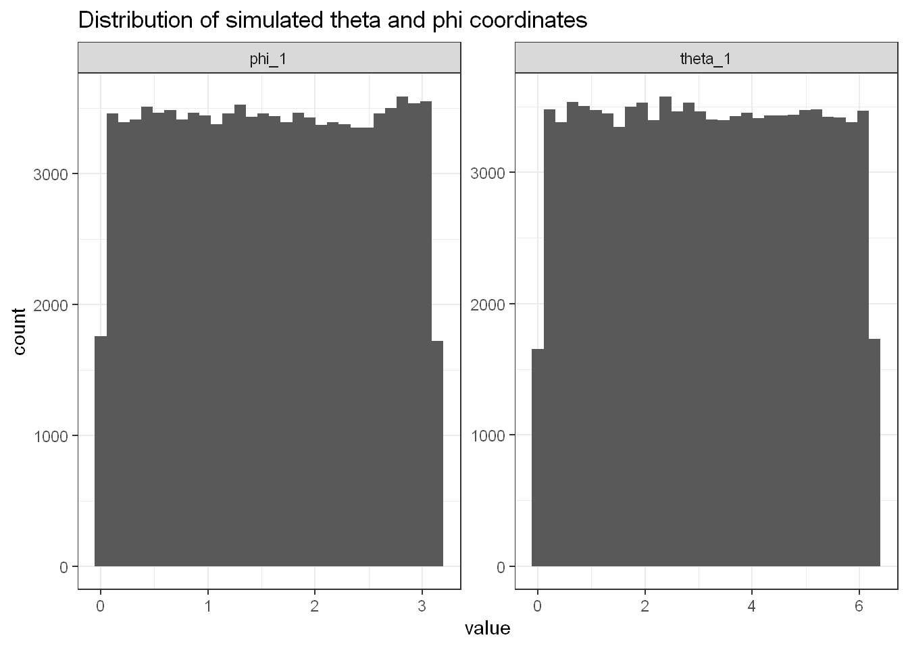
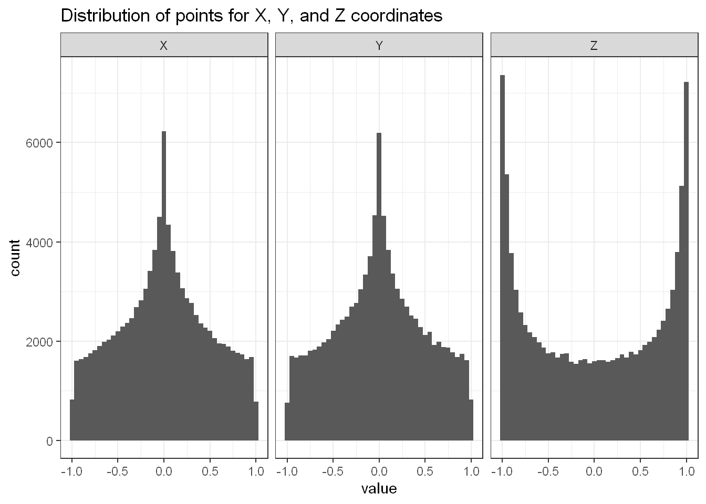
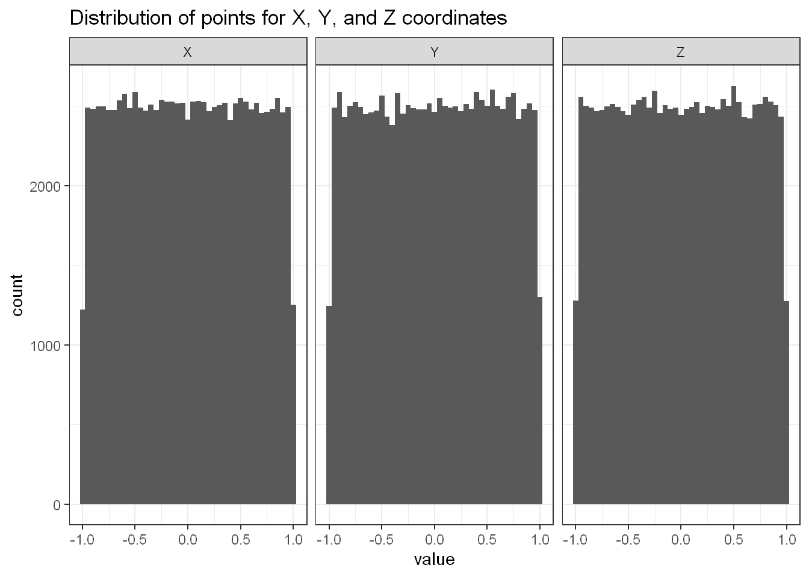

Recently I saw these two videos by MindYourDecisions that asked the question of what is the average distances for two random points in a square and what is the average distance for two random points on the circumference of a circle.
I wanted to produce a simulation that will answer these question as well as answer new ones like, what is the average distance for a line in a circle, and what is the average distance between two random points on the surface of a sphere?
First let’s show the result for the case of two randomly points in a square. We will simulate the answer
To calculate distance between two points say \(P_1\) and \(P_2\) with coordinates \((x_1,y_1)\) and \((x_2,y_2)\) respectively. We simply use the Pythagorean theorem to obtain the distance.
\[ d = \sqrt{(x_2-x_1)^2+(y_2-y_1)^2} \]
We can now simulate the average distance by randomly choosing points \(P_1\) and \(P_2\) and then finding the mean of their distances.
library(tidyverse)
n <- 1e6
set.seed(123)
x1 <- runif(n) ;x2 <- runif(n)
y1 <- runif(n) ;y2 <- runif(n)
distances <- sqrt((x2-x1)^2+(y2-y1)^2)
sim_dist <- mean(distances)
exact_dist <- (2+sqrt(2)+5*log(sqrt(2)+1))/15
sim_dist## [1] 0.5214964\[ \text{Estimated distance} = 0.521496403495269 \]
We know what the precise value should be. It can be found from the first video linked earlier.
exact_dist## [1] 0.5214054\[ \text{Actual distance} = \frac{2+\sqrt2+5\log{(\sqrt{2}+1)}}{15} \approx 0.521405433164721 \]
This means we can work out the relative percentage error for our simulation
(sim_dist-exact_dist)/exact_dist*100## [1] 0.01744714\[ \text{Relative Percentage error with 1,000,000 points} = 0.017\text{%} \]
We obtain very close results to the actual answer.
Now we answer the question from the second video about the average distance between two random points on the circumference of a circle.
We will change our coordinate system from cartesian coordinates to polar coordinates.
For the distance \(d\) between two points we have \[ d = \sqrt{(x_2-x_1)^2+(y_2-y_1)^2} \] In terms of polar coordinates, and setting \(r=1\) we obtain.
\[ d=\sqrt{2-2\cos(\theta_2-\theta_1)} = | 2\sin \frac{\theta_2-\theta_1}{2}| \]
We take the modulus as we only want positive values.
Now we look for confirmation that all the distance formulas agree with each other.
In cartesian coordinates,
#Test of same distance
theta_1 = runif(1,max=2*pi) ;theta_2 = runif(1,max=2*pi)
## distances
# in x and y
sqrt((cos(theta_2)-cos(theta_1))^2+(sin(theta_2)-sin(theta_1))^2)## [1] 1.176225In polar coordinates
sqrt(2-2*cos(theta_2-theta_1))## [1] 1.176225In another another trigonometric identity
abs(2*sin( (theta_2-theta_1)/2 ))## [1] 1.176225We see that the values agree with each other. Now we simulate many points randomly and then calculate the average distance
n <- 1e6
set.seed(123)
theta_1 <- runif(n,min=0,max=2*pi)
theta_2 <- runif(n,min=0,max=2*pi)
sim_dist <- mean(sqrt(2-2*cos(theta_2-theta_1)))
sim_dist## [1] 1.273336\[ \text{Estimated distance} = 1.273336 \]
exact_dist <- 4/pi
exact_dist## [1] 1.27324\[ \text{Actual distance} = \frac4\pi \approx 1.27324 \]
(sim_dist-exact_dist)/(exact_dist)*100## [1] 0.007585434\[ \text{Relative Percentage error with 1,000,000 points} = 0.008\text{%} \]
For derivation of the actual result see the video1
Now we simulate two points on a sphere. In cartesian coordinates the distance is as follows
\[ d = \sqrt{(x_2-x_1)^2 + (y_2-y_1)^2 + (z_2-z_1)^2 } \]
By converting to spherical polar coordinates with the following transformation
\[ \begin{align} x &= r \cos\theta\sin\phi\\ y &= r \sin\theta\sin\phi\\ z &= r \cos\phi \end{align} \]
By using the fact that \(r=1\), we obtain (after a lot of work) the following distance formula
\[ \sqrt{2-2\Big(\sin(\phi_1)\sin(\phi_2)\cos(\theta_2-\theta_1)+\cos(\phi_1)\cos(\phi_2)\Big)} \]
Where for point \(P_i\) has cartesian coordinates \((x_i,y_i,z_i)\) and spherical polar coordinates \((r_i,\theta_i,\phi_i)\).
We can actually simplify this expression even further by choosing \(P_1\) to point “North” i.e. set the coordinates as
\[ (r_1=1,\theta_1=0,\phi_1=0) \]
Then we are left with the expression
\[ d = \sqrt{ 2-2\cos\phi_2} \]
Now that all that’s left is to simulate the results and find the mean!
n <- 1e5
set.seed(123)
theta_1 <-runif(n,min=0,max=2*pi)
theta_2 <-runif(n,min=0,max=2*pi)
phi_1 <- runif(n,min=0,max=pi)
phi_2 <- runif(n,min=0,max=pi)
dist <- sqrt(2-2*(sin(phi_1)*sin(phi_2)*cos(theta_2-theta_1)+cos(phi_1)*cos(phi_2)))
simple_dist <- sqrt(2-2*(cos(phi_2)))
mean(dist)## [1] 1.320945mean(simple_dist)## [1] 1.273955Hold on! The two distances don’t agree with each other. Let’s convert to cartesian and work out the distances there
polar_to_cart <- function(theta,phi){
x = cos(theta)*sin(phi)
y = sin(theta)*sin(phi)
z = cos(phi)
return(list(x,y,z))
}
sphere_1 <- polar_to_cart(theta_1,phi_1)
sphere_2 <- polar_to_cart(theta_2,phi_2)
dist <- sqrt((sphere_2[[1]]-sphere_1[[1]])^2+(sphere_2[[2]]-sphere_1[[2]])^2+(sphere_2[[3]]-sphere_1[[3]])^2)
mean(dist)## [1] 1.320945None of the distances seem to be agree with each other. What gives? Well let’s plot the points and see what is happening
cbind(theta_1,phi_1) %>% as_tibble() %>%
pivot_longer(everything()) %>%
ggplot(aes(x=value))+geom_histogram()+
facet_wrap(.~name,scales="free")+
ggtitle("Distribution of simulated theta and phi coordinates")+
theme_bw()
Well the \(\theta\) and \(\phi\) values seem to be uniformly distributed., let’s check the cartesian coordinates
sphere_1 %>% as_tibble(.name_repair = "unique") %>%
rename("X"="...1","Y"="...2","Z"="...3") %>%
pivot_longer(everything()) %>%
ggplot(aes(x=value))+geom_histogram(binwidth = .05)+
facet_wrap(.~name)+theme_bw()+
ggtitle("Distribution of points for X, Y, and Z coordinates")
Ahah! We see that the \(x,y,z\) coordinates are NOT uniformly distributed. This means that we have many points clustered together about the poles of the sphere, and we have few points around the equator.
To understand more in-depth see this page2
Consider \(U\) and \(V\) as random variables with a uniform distribution. That is,
\[ U \sim \text{Unif}(0,1) \\ V \sim \text{Unif}(0,1) \]
Then for \(\theta\) and \(\phi\) in terms of \(U\) and \(V\), we get
\[ \theta = 2\pi U \\ \phi = 2 \arccos(2V-1) \]
n <- 1e5
generate_points_on_sphere <- function(n=100){
u <- runif(n)
v <- runif(n)
theta <- 2*pi*u
phi <- acos(2*v-1)
return(list(theta,phi))
}
set.seed(123)
sphere_1 <- generate_points_on_sphere(n)
sphere_2 <- generate_points_on_sphere(n)Let’s plot the points.
sphere_1_df <- sphere_1 %>% as_tibble(.name_repair = "unique") %>%
rename(c("theta"="...1","phi"="...2"))
polar_to_cart(sphere_1_df$theta,sphere_1_df$phi) %>% as_tibble(.name_repair = "unique") %>%
rename("X"="...1","Y"="...2","Z"="...3") %>%
pivot_longer(everything()) %>%
ggplot(aes(x=value))+geom_histogram(binwidth = .05)+
facet_wrap(.~name)+theme_bw()+
ggtitle("Distribution of points for X, Y, and Z coordinates")
The distribution of points on the sphere is much better! We now see that the there is a near uniform distribution for the various coordinates.
theta_1 <- sphere_1[[1]] ;theta_2 <- sphere_2[[1]]
phi_1 <- sphere_1[[2]] ;phi_2 <- sphere_2[[2]]
dist <- mean(sqrt(2-2*(sin(phi_1)*sin(phi_2)*cos(theta_2-theta_1)+cos(phi_1)*cos(phi_2))))
dist## [1] 1.335975simple_dist <- mean(sqrt(2-2*(cos(phi_2))))
simple_dist## [1] 1.332862Both distance formulas give a similar answer. We will take the simplified expression purely because it is simple.
\[ \text{Estimated distance} = 1.332862 \]
\[ \text{Actual distance} = \frac43 = 1.333\dots \]
(simple_dist-(4/3))/(4/3)*100## [1] -0.03532985\[ \text{Relative Percentage error with 100,000 points} = -0.035\text{%} \]
We obtain close results! The negative sign here means that the simulation actually underestimated the true value.
For the full gory math derivation of the actual result of \(\frac43\) see here3
We have seen how to use a simulation to generate reasonable and accurate results. This lets us simulate things without needing to go through the maths, however we had to be careful of how were we were simulating points.
There’s a lot more I want to explore, like what is the average area of a triangle inscribed on a circle or sphere? what about the average volume of a tetrahedron on a sphere? Many questions to ask but so little time…
Here we go! \[ \text{Average distance} = \frac{1}{S_A} \int_V \sqrt{(\Delta x)^2 +(\Delta y)^2 +(\Delta z)^2} \ dx \ dy \ dz \] By converting the average distance into spherical coordinates and by noting that the surface area of a unit sphere is \(S_A = 4\pi r = 4\pi\). We obtain the following \[ \begin{align} \text{Average distance} &= \frac{1}{S_A} \int_V \sqrt{(\Delta x)^2 +(\Delta y)^2 +(\Delta z)^2} \ dx \ dy \ dz, \\ &= \frac{1}{4\pi} \int_0^\pi \int_0^{2\pi} \sqrt{2-2\cos\phi} \ r^2 \sin\phi \ d\theta \ d\phi, \\ &= \frac{1}{2\pi} \int_0^\pi \int_0^{2\pi} \sin\frac{\phi}{2} \ \sin\phi \ d\theta \ d\phi, \qquad \textit{using the identity: } 2\sin^2\alpha = 1 -\cos2\alpha \\ &= \frac{1}{2\pi} \bigg( \int_0^{2\pi} d\theta \bigg) \bigg( \int_0^\pi \sin\frac{\phi}{2} \ \sin\phi \ d\phi \bigg), \\ &= \int_0^\pi \sin\frac{\phi}{2} \ \sin\phi \ d\phi, \\ &= \frac{1}{2} \int_0^\pi \cos\frac{\phi}{2} - \cos\frac{3\phi}{2} \ d\phi, \qquad \textit{using the identity: } \ 2\sin\alpha\sin\beta = \cos\big(\alpha-\beta\big) - \cos(\alpha+\beta) \\ &= \int_0^\frac{\pi}{2} \cos u - \cos 3u \ \ du, \qquad \textit{change of variables :} \ u = \frac{\phi}{2} \\ &= \bigg[ \sin u - \frac{1}{3} \sin 3u \bigg]^\frac{\pi}{2}_0, \\ &= \bigg[ \sin \frac{\pi}{2} - \frac{1}{3} \sin \frac{3\pi}{2} - (\sin 0 - \frac{1}{3} \sin 0) \bigg], \\ &= \bigg[ \frac{4}{3} + 0 \bigg], \\ \text{Average distance} &= \frac{4}{3} \text{units} = 1.333 \dots \text{units} \end{align} \]↩︎